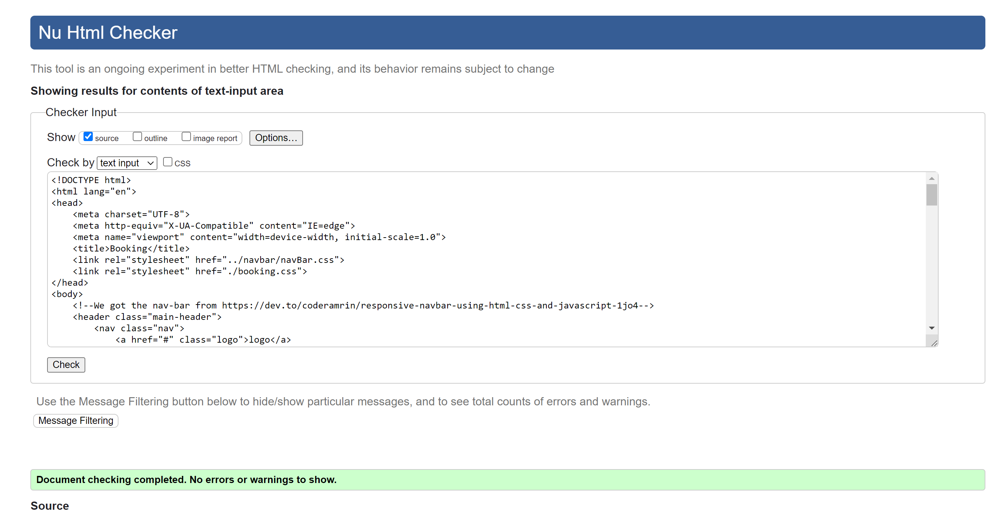
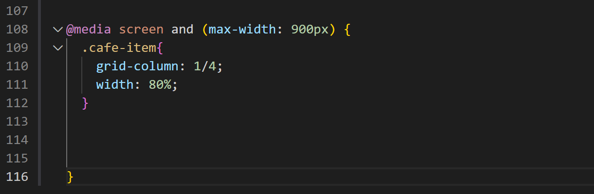
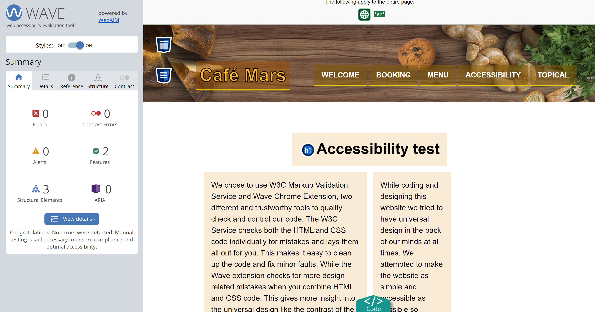

Accessibility test
We chose to use W3C Markup Validation Service and Wave Chrome Extension, two different and trustworthy tools to quality check and control our code.
The W3C Service checks both the HTML and CSS code individually for mistakes and lays them all out for you.
This makes it easy to clean up the code and fix minor faults.
While the Wave extension checks for more design related mistakes when you combine HTML and CSS code.
This gives more insight into the universal design like the contrast of the colors.
While coding and designing this website we tried to have universal design in the back of our minds at all times.
We attempted to make the website as simple and accessible as possible so anyone could navigate through it with ease.
This meant we also aimed to make the information readily available and easy to find, which means we had to take all screen sizes in to account
and try to cater to all of them. This is why we used the @media rule in the CSS stylesheet so the webpage scales to all sizes.
Screenshots

W3C Markup Validation check for Booking page.

Example of the @media rule command we utilized.

Wave extension check for Accessibility page.